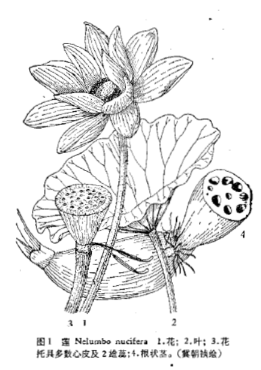

出现篇目
古代记载 《毛诗故训传》
荷华，扶渠也，其华菡萏。（《毛传》注《山有扶苏》）
《毛诗草木鸟兽虫鱼疏》
荷，芙蕖，江东呼荷，其茎茄，其叶蕸，茎下白蒻。其花未发为菡萏，已发为芙蕖。其实莲，莲青，皮里白子为的，的中有青长三分如钩为薏，味甚苦，故俚语曰“苦如薏”是也。的五月中生，生啖脆，至秋表皮黑，的成实，或可磨以为饭，如粟也，轻身益气，令人强健，又可为糜，幽州扬豫取备饥年，其根为藕，幽州谓之光旁，为光如牛角。
《毛诗正义》
“荷，扶蕖，其华菡萏”，《释草》文。又云：“其实莲，其根藕，其中的，的中薏。”李巡曰：“皆分别莲华实茎叶之名。的，莲实薏中心苦者也。”（《毛诗正义》疏《山有扶苏》）
《释草》云：“荷，芙蕖。其茎茄，其叶蕸，其本蔤，其华菡萏，其实莲，其根藕，其中的，的中薏。”李巡曰：“皆分别莲茎叶华实之名。菡萏，莲华也。（《毛诗正义》疏《泽陂》）
《诗集传》
荷華、芙蕖也。（《诗集传》集注《山有扶苏》）
菡萏、荷華也。（《诗集传》集注《泽陂》）
《本草纲目》
藏器曰：红莲花、白莲花，生西国，胡人将来也。
时珍曰：此不知即莲花否？而功与莲同，以类相从，姑移入此。
当代记载 《中国植物志》
莲 （Nelumbo nucifera），莲科，莲属植物。多年生水生草本；根状茎横生，肥厚，节间膨大，内有多数纵行通气孔道，节部缢缩，上生黑色鳞叶，下生须状不定根。叶圆形，盾状，直径25-90厘米，全缘稍呈波状；叶柄粗壮，圆柱形，长1-2米，中空，外面散生小刺。花直径10-20厘米，美丽，芳香；花瓣红色、粉红色或白色，矩圆状椭圆形至倒卵形，长5-10厘米，宽3-5厘米，由外向内渐小。坚果椭圆形或卵形，长1.8-2.5厘米，果皮革质，坚硬，熟时黑褐色；种子（莲子）卵形或椭圆形，长1.2-1.7厘米，种皮红色或白色。花期6-8月，果期8-10月。产于我国南北各省。自生或栽培在池塘或水田内。苏联、朝鲜、日本、印度、越南、亚洲南部和大洋洲均有分布。

<中国植物志>